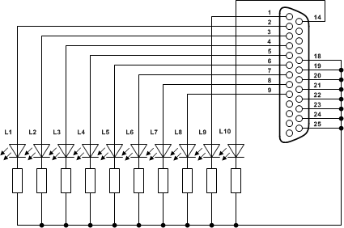
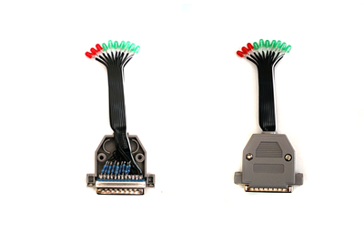
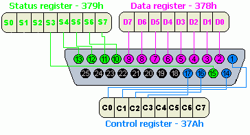

Slovak
SlovakAk ste niekedy rozmýšľali nad tým, že by ste pomocou počítača ovládali osvetlenie miestnosti alebo by ste si chceli postaviť vlastného robota ovládaného počítačom, môže vás práve tento článok nasmerovať správnym smerom. Ukazuje totiž, že vyrobiť hardvér pripojiteľný k paralelnému portu a napísať k nemu obslužného daemona v jazyku C nie je vôbec náročné.
1. Schéma a popis zostavenia hardvéru
Paralelný port označovaný často len skratkou LPT (z angl. Line Printer Terminal) je špecifický 25 pinovým konektorom. Osem pinov (2-9) sa dá použiť na priamy zápis, päť na čítanie (10-13 a 15), štyri na obe operácie (1,14,16 a 17) a zvyšných osem pinov (18-25) je uzemnenie. Ak by vám tento stručný popis nestačil, určite navštívte web hw.cz, kde o tomto, ale aj iných portoch nájdete oveľa viac informácií.
Ešte počas štúdia na vysokej škole som s pomocou spolubývajúceho vyrobil veľmi jednoduché zariadenie pozostávajúce z 10 LED diód pripojených k LPT konektoru. Potrebovali sme na to 10 LED diód, 10 rezistorov s odporom 100 Ω, jeden “male” (tzv. samec) LPT konektor s krytom a vhodný kábel. Schéma tohto zariadenia je uvedená pod textom. Mojím cieľom bolo vytvoriť program, ktorý by zabezpečil rozsvecovanie diód podľa aktuálneho využitia procesora. Vyťaženie do 10% by znamenalo jednu rozsvietenú LED diódu a vyťaženie od 90 do 100% rozsvietených všetkých desať LED diód.

Výsledok asi po hodine práce s mikrospájkou vyzerá takto:

Pre zjednodušenie celého zariadenia je možné zvoliť aj alternatívu, keď sú všetky diódy pripojené na jediný rezistor. V takom prípade však postupné rozsvecovanie diód znamená znižovanie svietivosti tých, ktoré už svietia.
V ďalšom texte sa pokúsim vysvetliť základy práce s LPT v jazyku C pod operačným systémom GNU/Linux. Príklad budem postupne rozširovať o nové funkcie, až nakoniec vznikne program CLM (CPU Led Meter) - daemon zabezpečujúci rozsvecovanie diód na vyššie popísanom hardvéri podľa aktuálneho využitia procesora, ktorý bude schopný spracovávať signály a tiež komunikovať so syslog daemonom.
2. Zápis na piny 2-9 – Data register
Jednotlivé piny LPT portu sú ovládateľné cez tri osembitové registre.
Register na adrese 378h sa nazýva “data register” a prislúchajú mu piny 2 – 9.
Adresa tohto registra sa často označuje ako “báza” alebo tiež “baseport”.
Register dostupný na porte s adresou báza + 1 (379h) sa nazýva “status register” a prislúchajú mu piny 10 – 13 a 15.
Z pinov status registra je možné iba čítať.
Posledný register nesie názov “control register”, je dostupný na adrese báza + 2 (37Ah) a prislúchajú mu piny 1, 14, 16 a 17.
Na tieto piny je možné signál vysielať, no tiež ho z nich aj prijímať.
Priradenie pinov k jednotlivým bitom spomínaných registrov je znázornené na nasledujúcom obrázku, ktorý je prebratý zo serveru hw.cz.

Z obrázku je jasne vidieť, že piny 2-9 sú priradené k registru s adresou 378h (malé h za číslom znamená, že číslo je v 16tkovej sústave).
Do tohto registra sa zapisuje číselná hodnota celého byte-u (bajtu) určujúca, na ktoré piny je vysielaný signál.
Ak chceme, aby svietila iba dióda pripojená k pinu č. 2, musíme na port s adresou 378h odoslať binárne číslo 00000001, čo je v desiatkovej sústave číslo 1.
Jednoduché príklady hodnôt tohto registra sú uvedené v nasledujúcej tabuľke.
| Svietiace LED diódy pripojené k pinom | Hodnota registra v dvojkovej sústave | Hodnota registra v desiatkovej sústave |
|---|---|---|
| 2 | 00000001 | 1 |
| 3,2 | 00000011 | 3 |
| 4,3,2 | 00000111 | 7 |
| 5,4,3,2 | 00001111 | 15 |
| 6,5,4,3,2 | 00011111 | 31 |
| 7,6,5,4,3,2 | 00111111 | 63 |
| 8,7,6,5,4,3,2 | 01111111 | 127 |
| 9,8,7,6,5,4,3,2 | 11111111 | 255 |
Samozrejme na tento port môžete odoslať akékoľvek binárne číslo do maximálnej veľkosti 8 bitov.
Ak vyšlete číslo 00100101 budú svietiť diódy pripojené k pinom 2, 4 a 7.
Ďalšie kombinácie sa tvoria analogicky.
V tejto chvíli by ste už mali vedieť, akú hodnotu treba zaslať na bázový port, ak chcete rozsvietiť niektorú z LED diód pripojených k data registru. Nasledujúci príklad vám ukáže ako to spraviť pomocou jednoduchého programu napísaného v jazyku C.
V prvom programe si vystačíme s funkciami ioperm a outb, ktoré sú definované v sys/io.h.
Funkcia ioperm definovaná ako int ioperm(from, num, turn_on) slúži na získanie alebo uvoľnenie prístupových práv k vybraným portom.
Parameter from určuje bázový port, ku ktorému má byť získaný prístup a parameter num definuje počet za ním nasledujúcich portov.
Ak chceme získať prístup ku všetkým trom opisovaným registrom bude hodnota parametra from rovná 0x378 a hodnota parametra num bude 3.
Parameter turn_on je prepínač.
Je potrebné nastaviť ho na hodnotu 1, ak chceme prístupové práva získať a na hodnotu 0 v prípade, že ich chceme uvoľniť.
Funkcia outb definovaná ako outb(value, port) nastavuje hodnotu byte-u na definovaný port.
K portu samozrejme musí byť získané právo prístupu funkciou ioperm.
Použitie funkcií je v ukážkovom programe č. 1, ktorý postupne rozsvieti osem LED diód pripojených k data registru. Pre stiahnutie, skompilovanie a spustenie príkladu stačí ako root spustiť:
# wget https://www.jimrich.sk/programovanie-lpt-v-linuxe/clm1.c
# gcc -Wall -O2 clm1.c -o clm1
# ./clm1
3. Zápis na piny 1 a 14 – Control register
Ovládanie diód pripojených k pinom prislúchajúcich control registru je trochu komplikovanejšie, pretože piny 1, 14 a 17 sú hardvérovo negované. Ak teda do bitu prislúchajúceho pinu 1 uložíte jednotku, nebude LED dióda k nemu pripojená svietiť. Ak do neho uložíte nulu, rozsvieti sa.
| Svietiace LED diódy pripojené k pinom | Hodnota registra v dvojkovej sústave | Hodnota registra v desiatkovej sústave |
|---|---|---|
| žiadna | 00001011 | 11 |
| 1 | 00001010 | 10 |
| 1,14 | 00001000 | 8 |
| 1,14,16 | 00001100 | 12 |
| 1,14,16,17 | 00000100 | 4 |
V ukážkovom programe č. 2 je kód, ktorý zabezpečí na vytvorenom zariadení postupné rozsvietenie všetkých 10 diód. Pripomínam, že posledné dve diódy sú pripojené k pinom control registra.
Pre stiahnutie, skompilovanie a spustenie príkladu stačí pod používateľom root spustiť:
# wget https://www.jimrich.sk/programovanie-lpt-v-linuxe/clm2.c
# gcc -Wall -O2 clm2.c -o clm2
# ./clm2
4. Rozsvietenie diód podľa vyťaženia CPU
V treťom ukážkovom programe som presunul prácu s LPT do funkcie rozsviet_led, ktorá zabezpečuje rozsvietenie príslušného počtu LED diód v závislosti od vstupného parametra usage.
Hodnotu tohto parametra určuje výstup funkcie vytazenie_cpu, ktorá vracia percentuálnu hodnotu aktuálneho vyťaženia CPU.
Pri písaní tejto funkcie som sa inšpiroval kódom aplikácie wmcpuload, ktorej autorom je Seiichi SATO.
Ukážkový program č. 3 teda už dokáže rozsvecovať diódy v závislosti na hodnote aktuálneho vyťaženia CPU. Pre stiahnutie, skompilovanie a spustenie príkladu stačí pod používateľom root spustiť:
# wget https://www.jimrich.sk/programovanie-lpt-v-linuxe/clm3.c
# gcc -Wall -O2 clm3.c -o clm3
# ./clm3
Hlavnou nevýhodou tohto programu však je, že po spustení blokuje terminál. Tento nedostatok je možné odstrániť spustením na pozadí pomocou príkazu:
# ./clm3 &
Oveľa elegantnejším riešením je však upraviť program tak, aby bežal ako daemon.
5. Daemonizácia procesu
Daemonizáciu procesu sprevádzajú činnosti ako napríklad oddelenie detského procesu pomocou funkcie fork a setsid a následné ukončenie rodičovského procesu volaním funkcie exit.
Je tiež dobré zmeniť aktuálny adresár na / volaním funkcie chdir, aby daemon neblokoval žiadny špecifický adresár a tiež zmeniť predvolené nastavenie prístupových práv k vytváraným súborom pomocou funkcie umask.
Netreba však ani zabudnúť uzatvoriť alebo presmerovať štandardný vstup (STDIN), výstup (STDOUT) a chybový výstup (STDERR), pretože deamon nemá prístup na terminál a teda nemôže využívať ich pôvodnú funkcionalitu.
Podrobnejší popis problematiky daemonizácie v Linuxe je možné nájsť v článku How to Daemonize in Linux.
Ukážkový program č. 4 rozširuje predchádzajúci príklad len o funkciu daemonizacia, ktorá zabezpečuje daemonizáciu procesu.
Pre stiahnutie, skompilovanie a spustenie príkladu stačí pod používateľom root spustiť:
# wget https://www.jimrich.sk/programovanie-lpt-v-linuxe/clm4.c
# gcc -Wall -O2 clm4.c -o clm4
# ./clm4
Program sa po spustení odpojí od terminálu a bude ďalej bežať na pozadí ako daemon.
Ukončiť sa dá jedine zaslaním signálu SIGTERM alebo SIGKILL.
Ak neviete ako na to, mohla by vám pomôcť “Lekcia4 - Získavanie informácií o systéme” z kurzu o systéme GNU/Linux.
Za nedostatok však možno považovať fakt, že pri ukončení daemona ostanú niektoré diódy svietiť, a preto v nasledujúcom ukážkovom programe pridáme kód zabezpečujúci obsluhu signálu SIGTERM.
6. Spracovanie signálu SIGTERM
V programoch pre unixové operačné systémy je možné pomocou funkcie signal určiť funkciu, ktorá má byť vykonaná pri prijatí definovaného signálu.
Možno vám práve napadlo vytvoriť funkciu, ktorá zabezpečí zhasnutie všetkých diód a s pomocou funkcie signal ju vykonať pri prijatí signálu SIGTERM.
Tento postup by samozrejme fungoval, no po prečítaní manuálu (man 2 signal) som nadobudol pocit, že bude lepšie, ak bude v obslužnej funkcii čo najmenej kódu.
Preto som upravil podmienku v hlavnom cykle programu tak, aby vykonanie obslužnej funkcie spracovanie_signalu spôsobilo ukončenie tohto cyklu a vykonanie kódu nasledujúceho za ním.
Tento kód samozrejme zabezpečí zhasnutie všetkých diód a ukončenie programu.
Ukážkový program č .5 rozširuje predchádzajúci príklad o spracovanie signálu SIGTERM.
Pre stiahnutie, skompilovanie a spustenie príkladu stačí pod používateľom root spustiť:
# wget https://www.jimrich.sk/programovanie-lpt-v-linuxe/clm5.c
# gcc -Wall -O2 clm5.c -o clm5
# ./clm5
7. Zaznamenávanie udalostí pomocou syslog daemona
Keďže proces pri daemonizácii stráca možnosť využívať štandardný výstup na terminál, nemôže priamo zobrazovať používateľovi správy o svojom behu. Samozrejme je možné presmerovať štandardný výstup do súboru, z ktorého môže používateľ čítať údaje napríklad v textovom editore. Väčšinou sa však používa logovanie udalostí pomocou syslog daemona, ktorý je štandardnou súčasťou snáď každého unixového systému.
Komunikácia s týmto daemonom sa inicializuje volaním funkcie openlog, ktorej tretí parameter určuje “syslog facility” a správa určená na zaznamenanie do systémových logov sa syslog-u odosiela pomocou rovnomennej funkcie syslog, ktorej prvý parameter zase určuje “syslog priority”.
Po skončení práce so syslog daemonom by sa mala komunikácia ukončiť volaním funkcie closelog.
Ak vám termíny ako “facility” alebo “priority” nič nehovoria, odporúčam vám preštudovať časť príručky systémového administrátora popisujúcu syslog daemona a následne aj manuál (man 3 syslog) k spomínaným funkciám.
Ukážkový program č. 6 rozširuje predchádzajúci príklad o logovanie udalostí prostredníctvom syslog daemona. Pre stiahnutie, skompilovanie a spustenie príkladu stačí pod používateľom root spustiť:
# wget https://www.jimrich.sk/programovanie-lpt-v-linuxe/clm6.c
# gcc -Wall -O2 clm6.c -o clm6
# ./clm6
8. Záver
Ukážkový program č. 6 obsahuje na začiatku článku požadovanú funkcionalitu - je to daemon, zabezpečuje rozsvecovanie diód na vyššie popísanom hardvéri podľa aktuálneho využitia procesora, je schopný spracovávať signály a komunikuje so syslog daemonom.
Špeciálne poďakovanie si zaslúži Michal Kopček, bez pomoci ktorého by tento článok nevznikol.